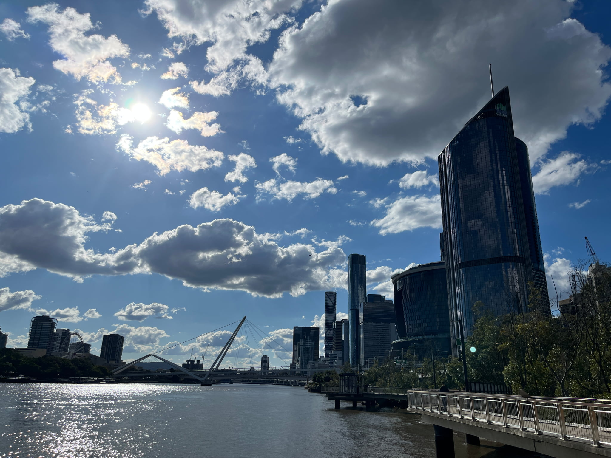

私を紹介します

私は某国立大学で情報工学を専攻している学部4年生男です。
現在は研究室に所属しており、強化学習の研究に励んでいます。
生成AIで世界が変わったので、次はフィジカルAIの時代だという気持ちで強化学習を選びました。
私の好きな食べ物は"ラーメン二郎"、趣味は"カラオケ"と"競技プログラミング"、
好きな漫画は「ONE PIECE」、「Hunter Hunter」、「タコピーの原罪」、
好きなゲームは「ポケモン」、「ドラクエ」、「Poppy Playtime」です。
よろしくお願いします。